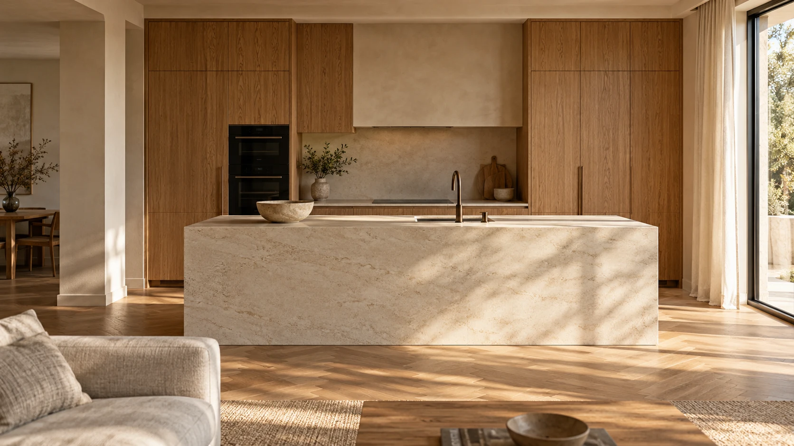

Priestor pre
vaše predstavy.
Kuchyňa, v ktorej sa stretávate.
Skriňa, v ktorej má všetko svoje miesto.
Nábytok, ktorý patrí práve k vám.
Ilustračný interiér · nie realizácia Bikki
Žiadny priestor nie je rovnaký.
Ani váš nábytok nemusí byť.
Vaše rozmery, váš každodenný život a váš vkus. Zákazková výroba dáva priestor riešeniam, ktoré sa prispôsobia vám.
Objavte svoj štýl ↗Takto môže vyzerať
váš nový začiatok.
Vizuálny smer návrhu.
Vo finálnej verzii tu budú
skutočné realizácie Bikki.
Všetky obrázky v návrhu sú ilustračné. Predstavujú dizajnový smer, nie portfólio dokončených zákaziek.
Drevo má charakter.
Dobrá práca tiež.
Podľa pôvodnej prezentácie sa Bikki venuje zákazkovej výrobe od roku 1990. V ponuke spája drevo s modernými materiálmi a tvorí nábytok pre rôzne časti domácnosti.
Nový domov nemusí začať veľkou zmenou. Niekedy stačí presne navrhnutý kus nábytku, ktorý konečne zapadne.
KOŠICE
Aký pocit má mať
váš domov?
Vyberte si náladu, ktorá vám je blízka. Farby pomôžu pomenovať predstavu pri prvom rozhovore.
Ilustračná farebná paleta. Konkrétne materiály a ich dostupnosť sa dohodnú s výrobcom.Začnime
rozhovorom.
Takto môže vyzerať prehľadný postup spolupráce na novom webe. Konkrétny priebeh potvrdí výrobca.
01Vaša predstava
−
Čo potrebujete, ako priestor používate a aký štýl vám je blízky? Fotografia alebo jednoduchý náčrt pomôžu začať rozhovor.
02Rozmery & možnosti
+
Pred výrobou je dôležité spresniť rozmery, materiály a praktické požiadavky. Detaily si dohodnete priamo s výrobcom.
03Návrh & dohoda
+
Rozsah, cenu a termín treba potvrdiť vopred. Prehľadná dohoda dá predstave konkrétny tvar.
04Nový kus vášho domova
+
Po odsúhlasení návrhu môže nasledovať výroba a odovzdanie podľa dohodnutých podmienok.
Ten váš nás
zaujíma.
Slavkovská 2
040 01 Košice
Pondelok – piatok
07:00 – 16:00